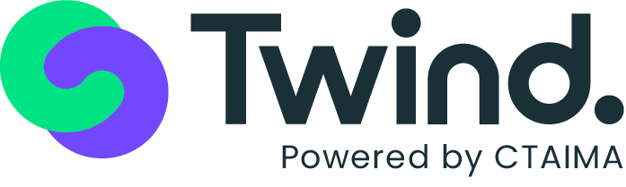
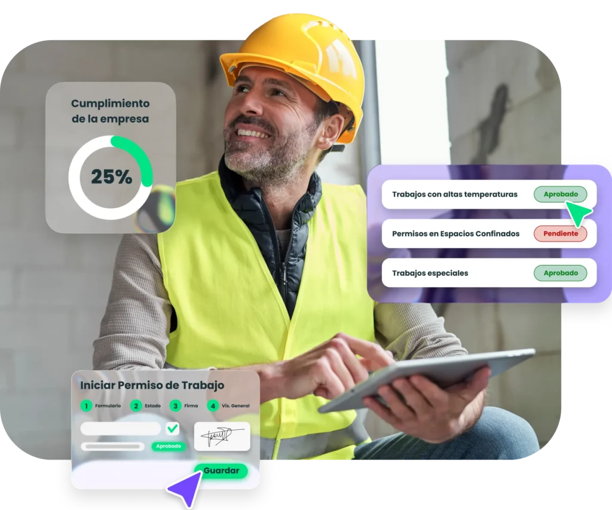

What we noticed
Twind's Mexico page leans on REPSE, IMSS, and access control. GetApp reviews ask for more automation in validation and a simpler main screen.

Saw CTAIMA building Mexico around Twind and hiring for Documenta, systems, and conversation design. Here is how we would add delivery capacity without pulling HQ off the core roadmap.

The signal says CTAIMA is moving from market entry to delivery scale. Enrique is building Mexico, and the Documenta Team Lead, Systems Engineer, and Conversation Designer roles show more product load behind the launch. Twind in Mexico is not only a demo site; it now speaks in local terms like REPSE, IMSS, access control, and contractor document checks. The bottleneck is likely local workflow support without pulling Spanish HQ off the core roadmap. If that backlog waits, sales can move faster than delivery.
Twind's Mexico page leans on REPSE, IMSS, and access control. GetApp reviews ask for more automation in validation and a simpler main screen.
Map the top contractor document states, then run one automation and test pass before adding more local features. Also smoke-test company selection after the Android blank-screen review.
Engagement model: a six-week dedicated squad under CTAIMA's product owner or PM, built to clear Mexico launch blockers.
Week 1Map Mexico onboarding, REPSE and IMSS checks, access-control handoffs, and the owner for each decision.
Weeks 2-3Stabilize the mobile access path, including company selection, offline mode, QR search, and sync checks.
Weeks 4-5Automate high-volume document validation cases and add regression tests for contractor status changes.
Week 6Package a demo, release notes, and a backlog CTAIMA can hand to HQ or keep with us.

Web, QA, and consulting work digitized document-heavy workflows and cut review time for a manufacturing client.
Read case study
Web, Android, QA, and consulting work reduced manual steps with barcode-driven workflows and synchronized service logic.
Read case study